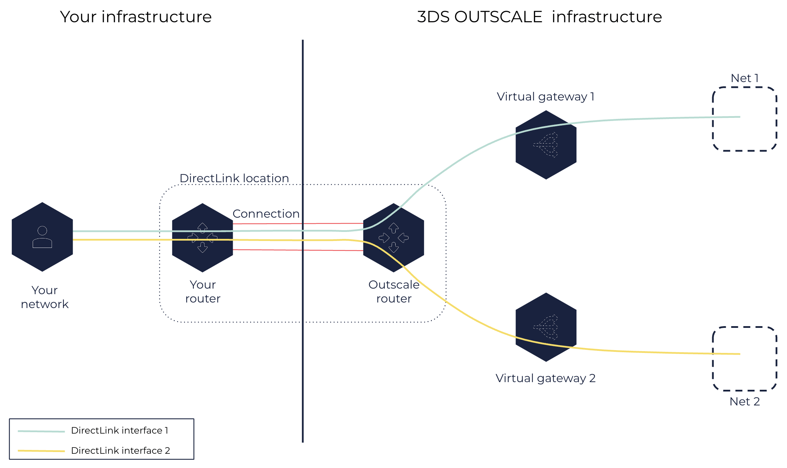

About DirectLink
You can create DirectLink connections between your network and OUTSCALE infrastructure to bypass internet service providers when reaching your resources in a Net. Private virtual interfaces enable you to configure these connections by specifying which Net you want to reach using the connection.
General Information About DirectLink Connections
A DirectLink connection is a physical connection between your network and a DirectLink location, which corresponds to a physical site of OUTSCALE infrastructure. This connection consists in a 1-Gb Ethernet or 10-Gb Ethernet fiber-optic cable that enables you to directly access your Cloud resources placed in the Region corresponding to this location without using the internet. As a location corresponds to a Subregion of a Region, you can connect to any location of this Region to access your resources in the whole Region.
|
One end of this cable is connected to your router and the other end is connected to an OUTSCALE DirectLink router through the datacenter meet-me room (MMR). To create a DirectLink connection, your network must:
-
Have a router or a fiber-optic cable in the same datacenter as the DirectLink location.
-
Be connected to a DirectLink router using a single-mode fiber with an LC connector: 1000BASE-LX (1310nm) for 1-Gb Ethernet or 10GBASE-LR (1310nm) for 10-Gb Ethernet.
-
Have a router that supports Border Gateway Protocol (BGP) and that is configured to communicate with the DirectLink router using the Autonomous System number (ASN) for 3DS OUTSCALE. Thus, the DirectLink router becomes your neighbor.
The ASN for 3DS OUTSCALE depends on the Region:
-
50624 for the eu-west-2 and cloudgouv-eu-west-1 Regions
-
53306 for the us-east-2 Region
-
If your internal network is not in the same datacenter as a DirectLink location, you can ask any network service provider to thread a cable there for you. Once you have requested a DirectLink connection, 3DS OUTSCALE sends you a Letter of Authorization (LOA) that allows you to connect your network to the corresponding DirectLink router. You then need to give this letter to your network service provider, who will ask the datacenter to connect your fiber-optic cable to the DirectLink router to create the connection.
You can create DirectLink connections to access your resources that are in Nets only. By default, a Net cannot be accessed from the internet. DirectLink connections enable you to reach your Net directly from your internal network, which reduces latency and improves throughput performance. The Net containing your resources must have at least one Subnet and a virtual gateway attached to it.
|
The security groups used for the Net must allow flows coming from your internal network. |
A connection can be in one of the following states:
-
pending: 3DS OUTSCALE has approved the connection and has sent you the LOA, and the connection is being initialized. -
available: The network link is plugged to both your router and the DirectLink router, and the connection is ready for use. -
disabled: The network link is down. -
deleted: The connection is deleted.
DirectLink Connections and DirectLink Interfaces
To access your resources using a DirectLink connection, you must configure this connection with one or more DirectLink interfaces. A DirectLink interface corresponds to a network path between your internal network and one of your Nets, specified using the virtual gateway attached to it. You need a DirectLink interface for each Net you want to access, and you can create several DirectLink interfaces for a same DirectLink connection.
When creating a DirectLink interface, you specify:
-
A DirectLink connection:
-
Using Cockpit, the name and ID of a DirectLink connection.
-
Using AWS CLI, the ID of a DirectLink connection.
-
-
A name for the DirectLink interface.
-
A VLAN for each DirectLink interface to partition the connection into several network paths. You must use a unique VLAN for each DirectLink interface created for a same DirectLink connection.
-
The Border Gateway Protocol (BGP) Autonomous System Number (ASN). For more information, see the General Information About DirectLink Connections section above.
-
A private virtual gateway in the
availablestate.
For more information, see Creating a DirectLink Interface.
You can also create a DirectLink interface to be owned by another OUTSCALE account. This type of DirectLink interface, called hosted DirectLink interface, needs to be confirmed by its intended owner before it becomes available for handling traffic. For more information, see Creating a Hosted DirectLink Interface and Accepting a Hosted DirectLink Interface.
You can also update the maximum transmission unit (MTU) of your DirectLink interface. The MTU is the size in bytes of the largest packet that can be passed over the connection. For more information, see Modifying the MTU of a DirectLink Interface.
|
The MTU of a virtual private interface is limited to 1500 bytes. |
A DirectLink interface can be in one of the following states:
-
confirming: The virtual interface is pending confirmation from its owner. After 7 days, if the virtual interface is not confirmed, its state becomesexpired. -
pending: The virtual interface is created but remains in thependingstate until both your router and the DirectLink router are configured. -
available: The virtual interface can forward traffic. -
deleting: The virtual interface is pending deletion. The virtual interface remains in thedeletingstate until 3DS OUTSCALE removes the DirectLink router configuration. -
deleted: The virtual interface is deleted and cannot forward traffic anymore. -
rejected: The virtual interface has been deleted when it was in theconfirmingstate. -
expired: The owner of the virtual interface has not confirmed its creation within the 7-day limit. The virtual interface can no longer be used and you need to create a new one.
The following schema shows a DirectLink infrastructure:

Related Pages
AWS™ and Amazon Web Services™ are trademarks of Amazon Technologies, Inc or its affiliates in the United States and/or other countries.